Every Step Evolves：扩展万亿参数思考模型的强化学习
Ling 团队，Inclusion AI*
*完整作者名单见贡献者部分（第6节）。
摘要
我们提出 Ring-1T，这是首个达到万亿参数规模、具备最先进性能的开源思考模型。它共有1万亿参数，每个 token 约激活500亿参数。训练这种万亿参数规模的模型带来了前所未有的挑战，包括训练与推理不对齐、rollout 处理低效，以及 RL 系统瓶颈。为解决这些问题，我们率先提出三项相互关联的创新：（1）IcePop 通过 token 级差异掩码与裁剪，解决训练与推理不匹配引发的不稳定，使 RL 训练稳定下来；（2）C3PO++ 在 token 预算下动态分割长 rollout，提高资源利用率，从而实现较高的时间效率；（3）ASystem 是一个高性能 RL 框架，旨在克服阻碍万亿参数模型训练的系统瓶颈。Ring-1T 在关键基准上取得突破性结果：AIME-2025 为93.4、HMMT-2025 为86.72、CodeForces 为2088、ARC-AGI-1 为55.94。值得关注的是，它在 IMO-2025 上达到银牌水平，彰显了卓越的推理能力。通过向社区发布完整的1T参数 MoE 模型，我们让研究社区能够直接使用前沿推理能力。这项贡献是推动大规模推理智能普及的重要里程碑，并为开源模型性能确立了新的基线。
日期：2025年10月22日
代码：https://github.com/inclusionAI/Ring-V2
模型：https://huggingface.co/inclusionAI/Ring-1T
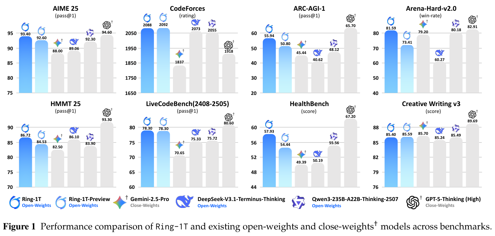
1 引言
人工智能正在经历一个关键转变：大语言模型（LLM）正在超越静态的人类知识语料，成为把信息转化为可付诸行动的洞见与理解的动态处理器（Team et al., 2025; DeepSeek-AI, 2025）。它们的核心能力——复杂、自适应的问题求解——为这种向更通用智能的发展提供了实证支持。近期在高难度人类竞赛题求解上的突破，具体证明了大语言模型推理能力的显著提升。例如，模型（OpenAI, 2025; Team, 2025）已在 AIME-2025（AIME, 2025）和 HMMT-20251 上达到100%准确率，并在国际数学奥林匹克竞赛（IMO）上取得奖牌水平的表现（OpenAI, 2025）——这是高级人类智能的标志。这种超越静态知识库的演进，由跨多个领域的数万亿 token 训练，以及经强化学习优化的推理技术共同推动（OpenAI, 2024; DeepSeek-AI, 2025）；这些技术使模型能够随思考投入动态扩展能力，指向更高层次的通用智能。
尽管相关工作（DeepSeek-AI, 2025; Zhipu-AI, 2025）已为开源社区作出宝贵贡献，万亿参数思考模型的前沿仍是一片未知领域。扩展到这一规模会带来严峻挑战，例如严重的训练不稳定，以及高得难以承受的计算成本。在本工作中，我们提出 Ring-1T，这是一种扩展到前所未有规模的新型 MoE 思考模型，并展示高效训练万亿参数模型的突破性方法。通过解决这一规模上的基础稳定性与效率挑战，我们实现稳健的大规模推理训练，同时提供大量实现层面的见解。
Ring-1T 是首个总参数达1万亿的开源推理模型，建立在 Ling 2.0（Ling-Team, 2025）架构之上，并从 Ling-1T-base 训练而来。每个 token 约激活500亿参数，Ring-1T 仅依赖自然语言推理能力，便在多个具有挑战性的基准上达到最先进性能。它显著超越现有开源模型，在 AIME-2025 上达到93.4、HMMT-2025 达到86.72、CodeForces 达到2088、ARC-AGI-v1 达到55.94。尤其值得关注的是，在 AWorld2 中进行的 IMO-2025 评估里，Ring-1T 在单次提交中正确解出四道题，并部分证明了第2题，达到银牌水平，且不依赖代码生成或外部符号求解器。实现这一突破，需要解决万亿规模 RL 训练中的基础挑战。我们率先提出三项相互关联的创新：
- IcePop 通过裁剪差异过大的 token，消除 RL 训练中灾难性的训练与推理不对齐。这种选择性校正将不稳定的贡献剔除，同时保留高效更新，从而在不降低推理速度的情况下稳定训练。
- C3PO++ 引入受预算控制的 rollout 调度机制，消除 rollout 阶段瓶颈。因此，它避免对超大序列进行低效的单次处理，减少计算开销，并通过分批续接高效复用这些序列。
- ASystem 是面向大规模异步训练的高性能强化学习（RL）框架。它采用 SingleController + SPMD（Single Program, Multiple 接下页
1 https://www.hmmt.org/www/archive/problems
2 https://github.com/inclusionAI/AWorld
（接上页）Data，单程序多数据）架构，实现完全异步操作、多阶段掩码加速，以及高效的数据 packing／分片。
本文结构如下：第2节描述完整的训练方法，包括长 chain-of-thought 有监督微调（Long-CoT SFT）和大规模强化学习（RL），其中涵盖关键算法贡献 IcePop 与 C3PO++，以及底层训练框架 Asystem。最后，第3节在成熟基准上，对模型与领先的开放权重、封闭权重模型的性能进行全面评估。
2 方法
Ring-1T 模型通过多阶段流水线开发，先进行长 CoT SFT，再依次进入推理 RL 和通用 RL 阶段。尽管完整流水线对模型性能不可或缺，本报告主要聚焦 RL 组件。我们首先在第2.2节概述为 RL 做准备的长 CoT SFT 过程。随后讨论的核心转向第2.3节详细阐述的新型 RL 算法。此外，我们在第2.5节介绍 ASystem，这一分布式系统支持了本项目所需的大规模 RL 训练。
2.1 训练流水线
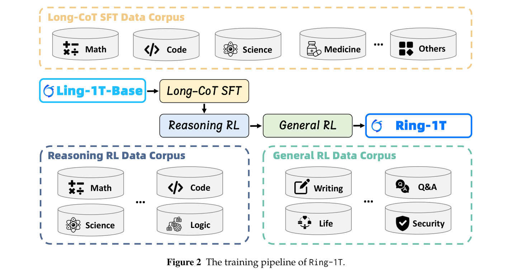
我们以 Ling-1T-base 模型（Ling-Team, 2025）为基础；它是一种新型 MoE 模型，总参数1万亿，激活参数500亿。Ring-1T 的训练由长 CoT SFT、面向推理的 RL 和面向通用任务的 RL 三个阶段组成，以培养强大的思考模型。
- 长 CoT SFT：我们收集并合成大量多领域推理轨迹数据，覆盖数学、代码、科学等。通过大规模有监督微调，模型学习通用推理模式和领域特定的推理技能，为大规模 RL 训练奠定（接下页）
（接上页）坚实基础。
- 推理 RL：我们构建了全面、具有挑战性且高质量的 RL 数据集，涵盖结果可验证的数学、代码、科学和逻辑任务。通过可验证奖励强化学习（Reinforcement Learning from Verifiable Rewards，RLVR）增强模型的综合推理表现。这一过程会采样大量推理轨迹，并利用精心设计的多领域验证器提供的可验证奖励来改进策略。
- 通用 RL：在可验证任务上完成大规模强化学习后，我们开展聚焦通用任务的第二阶段 RL。这一阶段采用人类反馈强化学习（Reinforcement Learning from Human Feedback，RLHF）重新校准模型的能力分布，在保留核心推理优势的同时，增强人类对齐、指令遵循、创意写作、安全性与整体可用性。
2.2 长 CoT SFT
在这一阶段，我们旨在通过长 chain-of-thought 有监督微调（Long-CoT SFT），赋予基础模型基本的长链推理能力。这一过程为后续强化学习奠定基础，使模型能够针对复杂问题维持连贯、多步骤的思考过程。
数据收集。我们构建了一个全面、高质量、具有长 CoT 推理模式的数据集，以有效激活基础模型的推理能力。问题池来自三种来源：开源仓库、专家人工生成，以及基于 LLM 的合成。数据收集后，实施严格的数据清洗流程。为保证所得数据集的质量，我们设计了四个依次执行的处理步骤：1）去重：使用精确匹配移除重复样本；2）有害内容过滤：识别并清除包含有毒或有害信息的样本；3）数据去污染：同时使用哈希与精确字符串匹配，检测并删除与现有基准重合的样本；4）低质量样本过滤：移除各种噪声源，包括不可见控制码和多余的 Unicode 字符。最终数据主要由四个领域构成：数学46%、STEM 26%、代码20%、其他8%。
训练。我们在 Ling-1T-base 模型（Ling-Team, 2025）上进行长 CoT SFT，得到具有初步思考能力的模型。训练数据被 packing 为64k长度的序列。此阶段训练3个 epoch，学习率为 \(2\times10^{-4}\)。采用余弦衰减调度器，含30个 warmup 步，并在全程使用0.1的权重衰减。
2.3 大规模强化学习
强化学习（RL）是将预训练与 SFT 中获得的知识转化为高级思考能力的关键下一步。为了在前所未有的1万亿参数规模上实现 RL，我们开发了一种新型 RL 算法和专门的基础设施 Asystem。这一集成方案克服训练效率与稳定性的基础挑战，使我们能够系统探索模型解决复杂问题的能力。
2.3.1 RL 数据
高质量、多样化数据对有效强化学习至关重要。因此，我们引入经过精心整理的多领域数据集，覆盖数学、代码、科学、逻辑和通用领域五个核心方面：
- 数学：在 Ling-Team et al.（2025）的数据集上，补充来自权威来源、具有数学严谨性的问题。整理过程确保完整性、高复杂度和解答可验证性，得到适合大规模强化学习的高质量语料。
- 代码：除 Ling-Team et al.（2025）使用的数据集外，我们开发多阶段工作流，对额外测试用例进行合成、验证、质量评分和筛选。这确保每道题配有足量、高质量的测试用例。最终数据集包含已验证正确解答、并配备精心测试用例的编程题。
- 科学：我们通过众包开发了高难度科学题数据集，覆盖物理、化学和生物。为确保强化学习所需的复杂度，将所有选择题改写为开放题。针对有机化学，建立专门的图像语义化流水线，将分子结构等视觉信息转化为结构化文本描述。最后，应用通过率过滤策略，只保留质量最高的条目。
- 逻辑：逻辑推理数据集覆盖五个领域：视觉模式归纳（Chollet et al., 2025）、网格谜题（Sudoku）、路径搜索（迷宫）、算术推理（24点游戏），以及命题逻辑（Knights and Knaves）。我们将 Hodel（2024）、Li et al.（2025）和 Liu et al.（2025）等公共资源整合进自研游戏生成器，合成题目，实现可扩展、可控的生成。在生成与后处理阶段，质量控制流程保证每项任务可解且非平凡。最终整理出的集合在领域与复杂度等级之间保持平衡，用于强化学习。
- 通用数据：通过汇总公共仓库和真实用户交互两个主要来源的问题，构建全面的通用推理数据集。公共来源包括 Magpie（Xu et al., 2024）、WMT（Feng et al., 2025）、RLVR-IFEval3 和 AutoIF4 等成熟通用数据集。为增强实践对齐，进一步纳入 arena-human-preference-100k 和 arena-human-preference-140k5 等真实用户偏好数据。此外，还补充了知乎与 StackOverflow 等社交媒体平台的问题。
最后，我们采用包含解析、改写与去重的多阶段整理流水线，通过 LLM 和基于规则指标组成的双重评分体系保证质量。此外，每个样本的细粒度元数据标注支持动态采样和跨领域混合，这一策略显著提高了训练效率，以及模型在复杂任务上的表现。
2.3.2 IcePop：丢弃所有噪声 gradient 更新
当代强化学习训练框架通常为模型训练与推理采用不同引擎。在实验中，我们观察到这种（接下页）
3 https://huggingface.co/datasets/allenai/RLVR-IFeval
4 https://huggingface.co/datasets/Post-training-Data-Flywheel/AutoIF-instruct-61k
5 https://huggingface.co/datasets/lmarena-ai
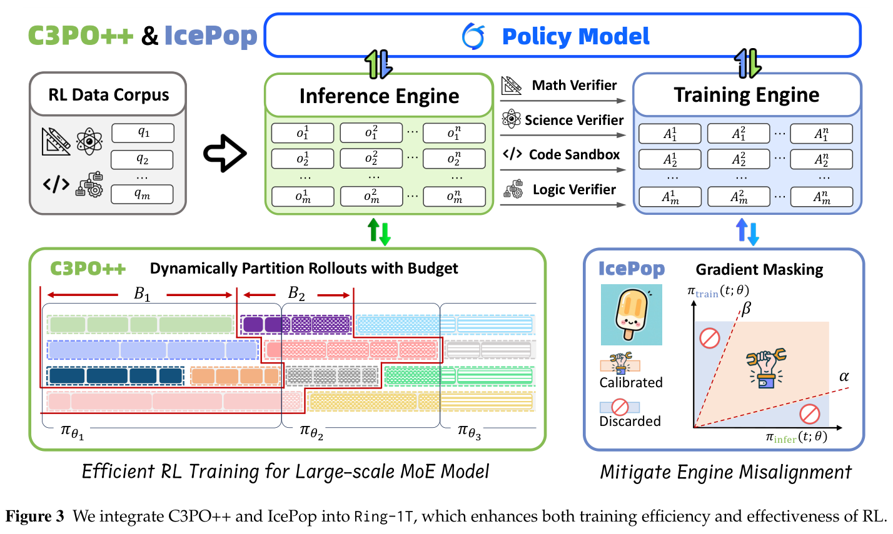
（接上页）分离可能导致概率计算差异，给 RL 训练引入不稳定。这一问题在采用 RL 训练 MoE 模型时尤其突出，因为模型内在使用动态路由机制。此外，在长 CoT 设置下，这些差异会在迭代中逐渐累积并进一步放大。
定理1（复合累积的概率差异）。设 \(\pi_{\mathrm{infer}}(\cdot;\theta)\) 和 \(\pi_{\mathrm{train}}(\cdot;\theta)\) 分别为推理与训练引擎加载的策略模型，\(\delta_t=D_{\mathrm{KL}}\bigl(\pi_{\mathrm{infer}}(\cdot;\theta_t)\|\pi_{\mathrm{train}}(\cdot;\theta_t)\bigr)\) 为第 \(t\) 步的概率差异。在一定条件及步长 \(\mu>0\) 下，存在常数 \(\eta>0\)，使得 \(\delta_{t+1}\ge(1+\frac{\eta}{2}\mu)\delta_t\)。
为解决 MoE RL 中这种复合累积的不匹配问题，我们提出 IcePop，它是 GRPO 的一种变体，通过双侧掩码校准抑制不稳定训练更新。IcePop 只校准可接受区域内的 gradient，丢弃边界外所有噪声 gradient 更新，有效使 \(\pi_{\mathrm{train}}\) 与 \(\pi_{\mathrm{infer}}\) 对齐。这通过两项关键技术实现：
- 双侧校准：在由上下限定义的区域内校准 token 级 gradient，充分保持训练概率与推理概率之间的对齐。
- 掩码：将概率偏差过大的 token 排除在 gradient 计算外，将 gradient 更新约束在稳定区域。
整合这些技术，得到 IcePop 的目标函数：
其中 \(r_{i,t}=\frac{\pi_{\mathrm{train}}(y_{i,t}|x,y_{i,<t};\theta)}{\pi_{\mathrm{train}}(y_{i,t}|x,y_{i,<t};\theta_{\mathrm{old}})}\)，\(M(k)\) 是如下定义的掩码函数：
其中 \(\alpha,\beta\) 控制上下限。因此，IcePop 的 gradient 为：
对于 \(\frac{\pi_{\mathrm{train}}(a;\theta_{\mathrm{old}})}{\pi_{\mathrm{infer}}(a;\theta_{\mathrm{old}})}<\alpha\) 和 \(\frac{\pi_{\mathrm{train}}(a;\theta_{\mathrm{old}})}{\pi_{\mathrm{infer}}(a;\theta_{\mathrm{old}})}>\beta\) 的情况，IcePop 丢弃该区域外所有可能给训练过程带来潜在不稳定的噪声 gradient。有关 IcePop 的更详细介绍见我们的博客6。
2.3.3 C3PO++：按预算动态分割 rollout
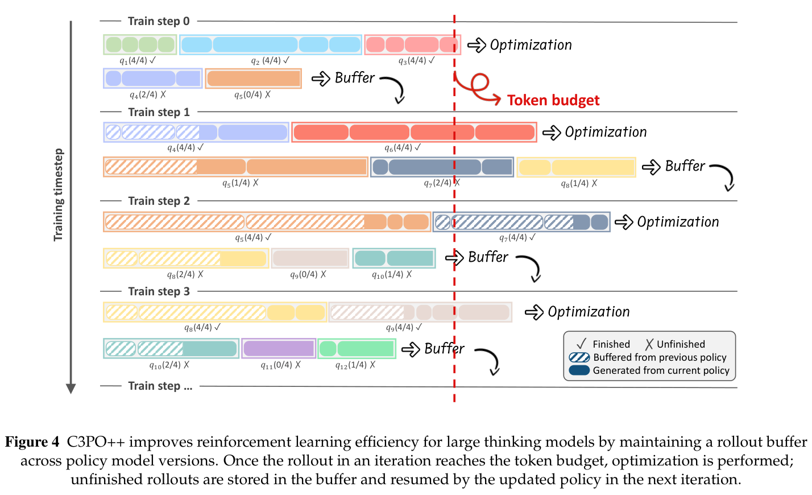
我们引入 C3PO++，这是 C3PO（Ling-Team et al., 2025）的扩展，加入受预算控制的 rollout 分割机制。它动态分割 rollout 生成，避免个别长 rollout 造成计算资源闲置。系统包含两个模块：容量为 \(\Omega_{\mathrm{infer}}\) 的高吞吐推理池 \(P_{\mathrm{infer}}\)，用于并行生成；以及容量为 \(\Omega_{\mathrm{train}}\) 的训练池 \(Q_{\mathrm{train}}\)，用于收集完整轨迹。类似 C3PO 的思路，我们以 token 预算 \(\Phi\) 调节 rollout 生成，使训练更新稳定，并实现高度高效的 rollout 过程。
C3PO++ 的过程详见算法1。在第 \(t\) 次迭代，推理引擎 \(\pi_{\mathrm{infer};\theta_t}\) 通过并行生成 rollout 填充推理池，同时实时跟踪累计生成 token 数 \(C\)。当一个 rollout 达到终止状态（即 [EOS]）时，它从 \(P_{\mathrm{infer}}\) 移入训练池 \(Q_{\mathrm{train}}\)，并计入训练 token 数 \(C\)。推理持续进行，直到 \(C\) 达到 token 预算 \(\Phi\)。此时，训练引擎 \(\pi_{\mathrm{train};\theta_t}\) 使用 \(Q_{\mathrm{train}}\) 中受 token 预算约束的完整轨迹更新参数；这些轨迹可能包含从更早推理版本恢复的样本。我们把一条序列经历的分割次数称为保留期。每次迭代中，未完成 rollout 的保留期自动加1。在每次迭代前，保留期超过阈值 \(\sigma\) 的 rollout 从 \(P_{\mathrm{infer}}\) 中清除。同时，可以采样新提示重新填充 \(P_{\mathrm{infer}}\)，直到达到容量 \(\Omega_{\mathrm{infer}}\)。模型参数更新为 \(\theta_{t+1}\) 后，推理引擎 \(\pi_{\mathrm{infer};\theta_{t+1}}\) 开始新一轮 rollout 生成，在 token 预算监控下，继续处理仍处于有效保留期内的 rollout。
算法1：C3PO++
输入：初始参数 \(\theta_0\)；推理引擎 \(\pi_{\mathrm{infer};\theta}\)；训练引擎 \(\pi_{\mathrm{train};\theta}\)；token 预算 \(\Phi\)；推理池容量 \(\Omega_{\mathrm{infer}}\)；保留阈值 \(\sigma\)。输出：参数更新序列 \(\theta_0\to\theta_1\to\cdots\)。状态：推理池 \(P_{\mathrm{infer}}\)（容量 \(\Omega_{\mathrm{infer}}\)）；训练池 \(Q_{\mathrm{train}}\)。
begin
P_infer ← ∅; Q_train ← ∅; t ← 0
while 未收敛 do
C ← 0
for o ∈ P_infer 并行执行 do
if retention(o, σ) then
P_infer ← P_infer \ {o} // 从推理池移除保留过久的 rollout
while C < Φ do
if |P_infer| < Ω_infer then
P_infer ← P_infer ∪ sample_prompt() // 保持推理池满载
for o ∈ P_infer 并行执行 do
o ← π_infer;θ_t(o) // 为各 rollout 并行生成下一个 token
if terminal(o) then
C ← C + |o| // 累计 token 数
Q_train ← Q_train ∪ {o} // 保存完整 rollout 用于训练
P_infer ← P_infer \ {o} // 从推理池移除完整 rollout
θ_(t+1) ← Update(θ_t, Q_train)
Q_train ← ∅
t ← t + 1
return θ_t
2.3.4 训练方案
全部策略优化均使用 ASystem 框架。我们采用 AdamW 优化器，超参数为 \(\beta_1=0.9\)、\(\beta_2=0.999\)、权重衰减0.01，并固定 MoE 路由器偏置。在推理 RL 阶段，采用所提出的 IcePop（\(\alpha=0.5\)，接下页
（接上页）\(\beta=5\)）和 C3PO++ 算法。训练配置为学习率 \(2\times10^{-6}\)、KL 系数0.0、采样温度1.0。每个训练步使用480个独立提示，每个提示采样8个 rollout，最大长度65,536 token。通用 RL 阶段采用 GRPO，学习率 \(3\times10^{-6}\)、KL 系数0.0、采样温度1.0。每步包含80个独立问题，每个问题8个输出，最大长度32,768 token。
2.4 实验与分析
本节通过实验验证所提方法的有效性：IcePop 保证稳定的策略优化，C3PO++ 实现高效的 rollout 生成。
2.4.1 IcePop
设置。为评估 IcePop 的有效性，我们在 Ring-mini-2.07 上进行初步实验；该 MoE 模型总参数16.8B，激活参数0.75B。比较三种设置：（1）\(\alpha=0.5,\beta=5\) 的 IcePop；（2）使用官方推荐设置的 TIS（Yao et al., 2025），通过重要性采样校正缓解训练与推理不匹配；（3）不带 KL 项的原始 GRPO。为公平比较，所有模型使用相同训练数据集。
Ring-mini-2.0 上的初步结果。如图5所示，IcePop 在具有挑战性的 AIME25 基准上始终优于 TIS，在整个训练过程中具有较大增益，最终比基础分数63%提高超过14%，并将与 TIS 的性能差距相对扩大6%。
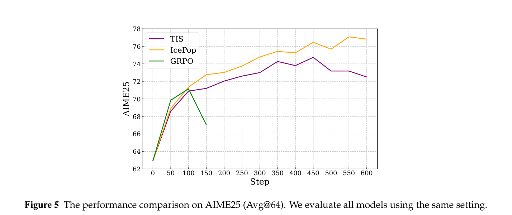
Ring-1T 上的实验。随着训练推进，图6显示原始 GRPO 存在训练不稳定，因为 gradient 范数以及推理引擎和训练引擎之间的概率差异均快速上升。应用 IcePop 后，不匹配问题得到大幅缓解，使 RL 训练过程稳定下来。
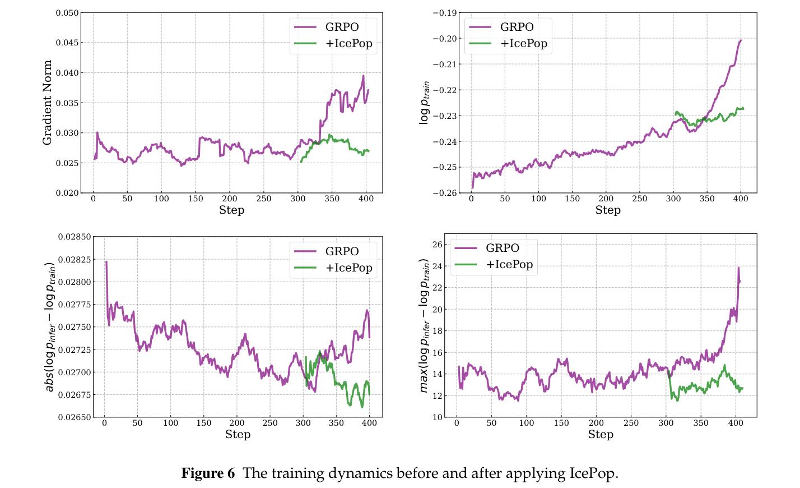
2.4.2 C3PO++
我们将 C3PO++ 与未使用受预算控制 rollout 分割机制的基线比较，从训练时间、训练奖励和基准表现方面评估训练效率与有效性。
- 训练时间。如图7所示，C3PO++ 显著缩短 rollout 阶段耗时，每步约加速2.5倍。由于 rollout 时长通常占 RL 训练时间的较大部分，C3PO++ 的训练优化使每步端到端阶段约加速1.5倍，显著提高强化学习的训练效率。
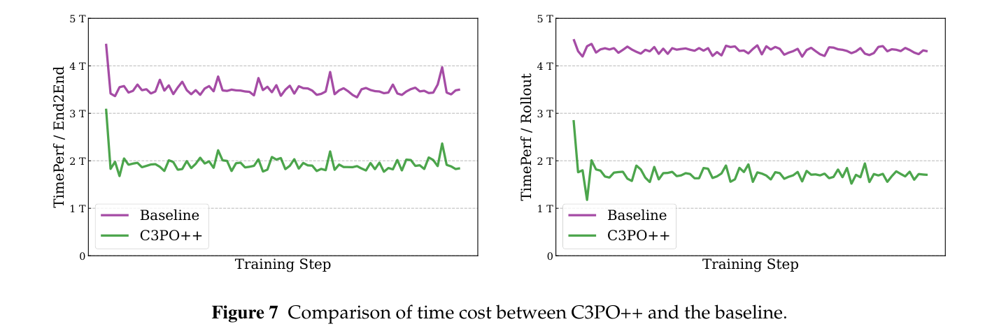
- 奖励与性能。如图8所示，C3PO++ 的奖励曲线始终接近基线，说明 rollout 管理优化在强化学习过程中保持了（接下页）
（接上页）相近的训练动态。在代表性推理基准上，C3PO++ 与基线性能相当，表明它能够产生有竞争力的结果。
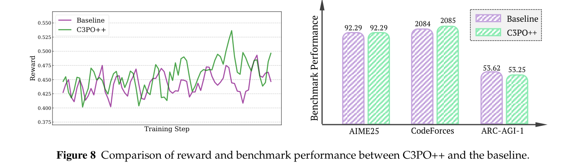
2.5 大规模 RL 基础设施：ASystem
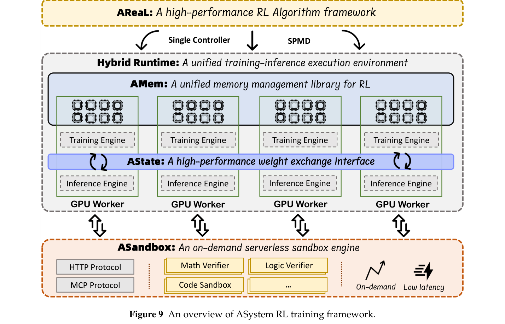
使用强化学习训练 Ring-1T，需要能够应对其前所未有规模的专门基础设施。模型体量与分布式 RL 工作流固有复杂性相结合，对内存管理、状态同步和计算吞吐量提出独特挑战。为此，我们开发高性能 RL 框架 ASystem，其各个组件均针对 Ring-1T 的需求协同设计。
如图9所示，ASystem 架构建立在统一执行环境之上，包含以下关键组件，每个组件都针对万亿参数模型 RL 训练中的特定瓶颈（接下页）
（接上页）进行设计：
- Hybrid Runtime：作为 ASystem 的核心，这一运行时无缝整合训练与推理工作负载。对 Ring-1T 而言，这意味着可以执行大规模并行策略评估（推理）与模型权重更新（训练），消除不同系统间的数据传输开销，确保数千块 GPU 高效利用。
- AMem：AMem 是一个 GPU 内存管理库，旨在克服像1T模型这样的大规模 RL 训练中的关键内存瓶颈。它优化内存使用与数据传输，以最少代码改动且不损失准确率，实现更大 batch、更少 OOM 错误和更快部署。
- AState：AState 是高性能 RL 权重同步框架。它通过零冗余点对点机制，高效解决将更新后模型参数从训练器分发至推理 actor 的难题，使万亿参数模型能在10秒内完成同步。
- ASandbox：用于快速场景验证的 serverless 环境。借助毫秒级冷启动与高吞吐隔离，ASandbox 加速大规模 RL 训练中 Ring-1T rollout 的评估。
这一基于 SingleController + SPMD（Single Program, Multiple Data，单程序多数据）架构的基础设计，为稳健大规模训练带来显著优势。它为训练、推理与奖励模型后端提供即插即用支持，方便大规模独立调试和开发。关键在于，通过分离控制流与数据流，ASystem 有效缓解主流 SingleController 框架普遍存在的单点数据流瓶颈。此外，系统包含快速失败报告，以及从训练缓慢和挂起中自动恢复的机制，从而提升 Ring-1T 等高要求工作负载的整体训练稳定性和效率。
2.5.1 Hybrid Runtime：统一的训练与推理执行环境
Hybrid Runtime 是为大规模 LLM 强化学习设计的训练与推理集成系统。它统一了高效资源调度、线性可扩展性、全面的并行策略和统一执行引擎，提供高性能、弹性且可扩展的基础。该系统旨在支持大型集群上架构、规模和训练范式各异的模型。
为弥合强化学习（RL）中动态训练与实时推理之间的差距，我们引入 AState，这是用于训练与推理间权重同步的高速框架。AState 提供统一权重管理 API，支持不同模型架构、部署拓扑和流水线范式，无需修改框架。其核心是零冗余点对点传输机制，只传送必要权重分片，并支持推理引擎原位更新，消除昂贵的数据复制。硬件与软件协同设计进一步借助 NUMA 拓扑和 CPU–GPU 亲和性感知来优化数据移动；多传输通信层整合 RDMA、NCCL 和共享内存，根据数据大小与硬件拓扑动态选择最优协议。因此，AState 实现亚秒级参数更新，确保推理 rollout 使用最新模型，并维持稳定策略优化必需的关键训练与推理对齐。
为提高 GPU 内存效率，我们引入 AMem，这是为 GPU 集群上的 RL 工作负载优化的内存与数据传输库。AMem 通过三项关键机制提高内存管理效率：（1）内存切换，透明地释放和恢复训练状态，包括 NCCL 通信与 CUDA graph；（2）分布式多路径传输（Shen et al., 2025），聚合多个通道的带宽；（3）统一内存池，在 GPU 和节点之间动态分配。通过支持更大的 batch、减少内存不足（OOM）错误和加快系统启动，AMem 缓解大规模 RL 中的常见瓶颈。该库设计透明，无需修改模型，且不影响 RL 收敛，因此为 Hybrid Runtime 与 AState 组件提供稳健的基础设施支持。
2.5.2 ASandbox：按需 serverless 沙箱引擎
ASandbox 是面向 RL 的 serverless 沙箱引擎，为代码执行和终端模拟等任务提供快速、隔离的环境。它与 Kubernetes 集成，可作为独立 FaaS 集群部署，通过函数调用执行 RL 任务。它提供数学、代码、STEM、终端等专用沙箱，支持 HTTP 与 MCP 协议。为确保 RL 训练所需的一致、稳定反馈，它具备：1）安全性：通过安全容器（runsc、kata）实现内核级隔离；2）可用性：自动检测和隔离节点故障；3）速度：借助镜像缓存、cgroups 与 fork 实现100ms启动；4）可扩展性：通过调度分区实现5,000 QPS／200ms的吞吐表现。
2.5.3 AReaL：高性能 RL 算法框架
ASystem 是统一、高性能的分布式强化学习基础设施。其强化学习组件 AReaL 是开源框架（Fu et al., 2025），通过平衡易用性与系统灵活性，优先服务算法开发。它借助极简 API 与可扩展插件机制，同时提供单控制器与 SPMD 接口，使研究者专注算法创新。
AReaL 具有以下关键特性：
- 异步多阶段流水线：完全解耦的架构并发执行轨迹生成、奖励计算与训练。这种重叠消除 rollout 长尾问题，最大化硬件利用率。
- 高效数据管理：智能数据 packing 和分片最大限度减少 padding 与重新均衡开销，降低计算浪费与训练停顿。
- 容错：自动错误检测、重试与恢复机制，确保硬件和软件故障下的稳定性。
- 大规模扩展：通过分离控制平面与数据平面，AReaL 避开单控制器瓶颈，实现跨大型集群的无缝扩展。
3 评估
本节展示 Ring-1T 在一系列具有挑战性的基准上的表现，覆盖数学、代码、逻辑推理及其他通用任务，并与领先推理模型比较。
3.1 基准
为全面评估 Ring-1T，我们在广泛基准上进行评测，主要覆盖知识、编码、数学、推理、对齐、医疗、多轮与 agent 八个领域。
- 知识：GPQA-Diamond（Rein et al., 2023）、MMLU-Pro（Wang et al., 2024）、C-Eval（Huang et al., 2023）、Phybench（Qiu et al., 2025）、AGIEval（Zhong et al., 2023）、TriviaQA（Joshi et al., 2017）、CMMLU（Li et al., 2023）。
- 编码：LiveCodeBench-v6（2408至2505）（Jain et al., 2025）、CodeForces8、Aider9。
- 数学：AIME 2025（AIME, 2025）、Omni-MATH（Gao et al., 2024）、HMMT 2025、CNMO 2024、FinanceReasoning（Tang et al., 2025）、UGMathBench（Xu et al., 2025）。
- 推理：ARC-AGI-1（Chollet et al., 2024）、BBEH（Kazemi et al., 2025）、ZebraLogic（Lin et al., 2025）、HLE（Phan et al., 2025）。
- 对齐：ArenaHard v2（Li et al., 2024）、Creative Writing v3（Paech, 2025）、IFEval（Zhou et al., 2023）。
- 医疗：HealthBench（Arora et al., 2025）。
- 多轮：MultiChallenge（Sirdeshmukh et al., 2025）。
- Agent：BFCL v3（Yan et al., 2024）。
我们将 Ring-1T 与领先开放权重模型（DeepSeek-V3.1-Terminus-Thinking、Qwen-35B-A22B-Thinking-2507）及专有 API 模型（Gemini-2.5-pro、GPT-5-Thinking）比较。所有评估均在受控实验条件下采用标准化配置。
3.2 评估设置
全部思考模型均在标准化流水线下评估，以保证公平比较。AIME 2025、LiveCodeBench-v6、ARC-AGI-1、CodeForces、HMMT 2025、ZebraLogic、HLE 和 BFCL v3 使用128K上下文窗口；对于原生上下文不足的模型，通过 YaRN（Peng et al., 2023）扩展。Aider、CNMO 2024 和 BBEH 使用64K窗口，其他基准使用32K窗口。基线模型中，开放权重模型采用其官方超参数，专有 API 采用厂商推荐设置。若基线有官方结果，则报告复现结果与官方发布结果中较高的分数。
3.3 结果
表1全面比较 Ring-1T 与领先思考模型。以下从不同方面详细分析其表现：
数学推理。Ring-1T 在高难基准上的表现展示了领先的数学推理能力。仅依靠自然语言推理，它在 AIME 25 上取得93.40%、HMMT 25 上取得86.72%，总排名第二，领先所有开放权重模型。此外，模型在专业数学领域也取得有竞争力的（接下页表后正文）
8 Codeforces 的评估使用14场 Codeforces Div. 2竞赛的题目，结合专家设计测试用例，随后计算预期评分与选手比例。可达到的最高评分为2209。
9 https://aider.chat/docs/benchmarks.html#the-benchmark
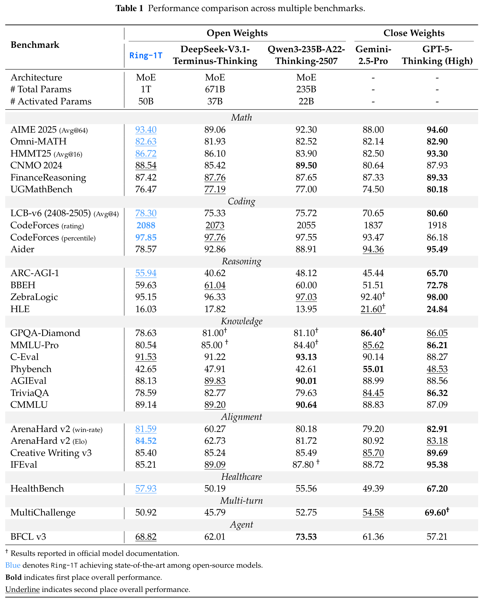
（接第14页）结果：Omni-MATH 为82.63%，CNMO 2024 为88.54%。这些结果凸显模型在复杂奥赛型问题求解上的突出能力。这表明，稳定、高效的 RL 训练方案配合多样化、高质量数学数据集，能够推动模型在竞赛级基准上取得出色的数学推理表现。
此外，我们在 IMO 2025 上评估 Ring-1T 的数学推理能力。具体而言，将 Ring-1T 集成至多 agent 框架 AWorld（Yu et al., 2025），要求其通过纯自然语言推理解题，不依赖代码生成或外部符号求解器。模型在首次尝试中成功解出第1、3、4、5题，表现相当于 IMO 银牌水平。第三次尝试时，它为第2题生成了近乎完整的几何证明。对于 IMO 2025 期间没有 AI 参赛者正确解出的最难第6题，Ring-1T 与 Gemini 2.5 Pro 收敛到相同错误答案4048，而正确答案为2112。详细案例分析见附录E。我们相信，出色的自然语言推理能力能够泛化到更广泛任务，为整体性能提升铺平道路。
编码能力。结果表明，Ring-1T 在需要迭代改进和深入逻辑推理的编程任务上表现出色，在开放权重与封闭权重模型中均处领先地位。在 LiveCodeBench-v6（2408–2505）上，它取得78.30%的高分，超过 DeepSeek-V3.1 2.97个百分点，超过 Qwen3-235B-A22B-Thinking-2507 2.58个百分点。此外，Ring-1T 的 CodeForces 评分为2088，是所有模型中最高，超过开源竞争模型和封闭源 API。这说明精心合成的数据集塑造了 Ring-1T 在编程应用上的稳健表现，为未来 agent 应用奠定坚实基础。
逻辑推理。Ring-1T 在其他逻辑推理任务上也展现可观能力。得益于从多个领域精心挑选逻辑游戏，Ring-1T 在具有挑战性的 ARC-AGI-1 上达到55.94%，总排名第二，仅次于 GPT-5-Thinking 的65.70%；相比 DeepSeek-V3.1 的40.62%显著提高15.32个百分点，相比 Qwen3-235B-A22B-Thinking-2507 的48.12%提高7.82个百分点。
人类对齐。除推理 RL 训练外，我们还采用通用 RL 训练阶段，使推理模型在通用任务上也有强大表现。表1显示，Ring-1T 在复杂场景中与人类偏好高度对齐。ArenaHard v2 上胜率81.59%，总排名第二，仅比 GPT-5-Thinking 低1.32个百分点；Elo评分84.52，领先所有模型。Creative Writing v3 得分85.40%，与领先开源模型相差不到0.1个百分点。这些结果证实 Ring-1T 能有效平衡人类偏好对齐与广泛能力，这是实际部署的关键优势。
医疗能力。HealthBench 上，Ring-1T 得分57.93%，总排名第二，领先全部开源模型。这表明模型擅长整合临床知识，也说明它可能适用于复杂医疗任务。
4 结论
本工作介绍 Ring-1T，它作为首个开放权重的1万亿参数思考模型，是一项里程碑成果。项目成功解决了将强化学习扩展至万亿参数规模所固有的、深刻且前所未有的系统与算法挑战。我们的核心贡献是三项相互关联的创新：解决训练与推理不匹配的 IcePop、高效处理长轨迹 rollout 的 C3PO++，以及消除扩展瓶颈并确保训练稳定性的 ASystem 框架。这些进展共同支持 Ring-1T 的稳定高效训练；它在覆盖数学推理、竞赛编程和通用智能的一系列严格基准上，展现突破性的最先进性能。这些结果验证了方法与系统，证明万亿参数推理模型不仅可行，还具备卓越能力。
5 局限与未来工作
尽管取得里程碑式成果，Ring-1T 及相关训练系统仍有若干局限，也为未来研究指出了有价值的方向。
- 模型架构与推理效率：模型使用 GQA（Ainslie et al., 2023），在性能和速度间实现良好平衡。但 Ring-1T 思考模型会生成大量内部“思考”过程，GQA 带来的推理成本仍不可忽视。因此，未来将探索 MoBA（Lu et al., 2025）或先进线性 attention 变体等替代机制，以达到高效推理所需的更高吞吐量。
- 训练与推理一致性：尽管 IcePop 方法缓解主要的训练与推理不匹配，仍未实现完全一致。训练与推理计算算子之间的底层数值差异，仍是潜在不稳定来源。解决这一基础系统挑战，对未来模型的稳定扩展至关重要。
- 能力短板：Ring-1T 的训练策略针对基础自然语言推理优化，对工具使用等高级 agent 技能的优化不足。未来迭代将以 Ring-1T 作为这些能力的基础，整合专门数据与 agent RL 等训练范式，培养复杂的自主问题求解能力。此外，数据不纯和正则化不足导致的身份混淆、语言切换等小问题，也将通过更精细的数据整理技术解决。
6 贡献者
作者按名字字母顺序排列。
†表示通讯作者。
参考文献
Moonshot AI. checkpoint-engine, 2025. https://github.com/MoonshotAI/checkpoint-engine.
AIME. AIME 试题与解答. https://artofproblemsolving.com/wiki/index.php/AIMEProblemsandSolutions, 2025.
Joshua Ainslie, James Lee-Thorp, Michiel de Jong, Yury Zemlyanskiy, Federico Lebrón, and Sumit Sanghai. GQA：从多头 checkpoint 训练广义多查询 transformer 模型, 2023. https://arxiv.org/abs/2305.13245.
Rahul K. Arora, Jason Wei, Rebecca Soskin Hicks, Preston Bowman, Joaquin Quiñonero Candela, Foivos Tsimpourlas, Michael Sharman, Meghan Shah, Andrea Vallone, Alex Beutel, Johannes Heidecke, and Karan Singhal. HealthBench：评估大语言模型以改善人类健康. CoRR, abs/2505.08775, 2025. doi: 10.48550/ ARXIV.2505.08775. https://doi.org/10.48550/arXiv.2505.08775.
Francois Chollet, Mike Knoop, Gregory Kamradt, and Bryan Landers. ARC Prize 2024：技术报告. arXiv preprint arXiv:2412.04604, 2024.
François Chollet, Mike Knoop, Gregory Kamradt, Bryan Landers, and Henry Pinkard. ARC-AGI-2：前沿 AI 推理系统的新挑战. CoRR, abs/2505.11831, 2025.
DeepSeek-AI. DeepSeek-R1：通过强化学习激发 LLM 的推理能力, 2025. https://arxiv.org/abs/2501.12948.
Tiantian Fan, Lingjun Liu, Yu Yue, Jiaze Chen, Chengyi Wang, Qiying Yu, Chi Zhang, Zhiqi Lin, Ruofei Zhu, Yufeng Yuan, Xiaochen Zuo, Bole Ma, Mofan Zhang, Gaohong Liu, Ru Zhang, Haotian Zhou, Cong Xie, Ruidong Zhu, Zhi Zhang, Xin Liu, Mingxuan Wang, Lin Yan, and Yonghui Wu. 截断近端策略优化, 2025. https://arxiv.org/abs/2506.15050.
Zhaopeng Feng, Shaosheng Cao, Jiahan Ren, Jiayuan Su, Ruizhe Chen, Yan Zhang, Zhe Xu, Yao Hu, Jian Wu, and Zuozhu Liu. MT-R1-Zero：通过类 R1-Zero 强化学习推进基于 LLM 的机器翻译, 2025. https://arxiv.org/abs/2504.10160.
Wei Fu, Jiaxuan Gao, Xujie Shen, Chen Zhu, Zhiyu Mei, Chuyi He, Shusheng Xu, Guo Wei, Jun Mei, Jiashu Wang, Tongkai Yang, Binhang Yuan, and Yi Wu. AReaL：用于语言推理的大规模异步强化学习系统, 2025. https://arxiv.org/abs/2505.24298.
Bofei Gao, Feifan Song, Zhe Yang, Zefan Cai, Yibo Miao, Qingxiu Dong, Lei Li, Chenghao Ma, Liang Chen, Runxin Xu, Zhengyang Tang, Benyou Wang, Daoguang Zan, Shanghaoran Quan, Ge Zhang, Lei Sha, Yichang Zhang, Xuancheng Ren, Tianyu Liu, and Baobao Chang. Omni-MATH：面向大语言模型的通用奥赛级数学基准, 2024. https://arxiv.org/abs/2410.07985.
Horace He and Thinking Machines Lab. 消除 LLM 推理中的非确定性. Thinking Machines Lab: Connectionism, 2025. doi: 10.64434/tml.20250910. https://thinkingmachines.ai/blog/defeating-nondeterminism-in-llm-inference/.
Michael Hodel. 通过程序化样例生成应对抽象与推理语料库. CoRR, abs/2404.07353, 2024.
Jian Hu, Xibin Wu, Wei Shen, Jason Klein Liu, Zilin Zhu, Weixun Wang, Songlin Jiang, Haoran Wang, Hao Chen, Bin Chen, Weikai Fang, Xianyu, Yu Cao, Haotian Xu, and Yiming Liu. OpenRLHF：易用、可扩展的高性能 RLHF 框架, 2025. https://arxiv.org/abs/2405.11143.
Yuzhen Huang, Yuzhuo Bai, Zhihao Zhu, Junlei Zhang, Jinghan Zhang, Tangjun Su, Junteng Liu, Chuancheng Lv, Yikai Zhang, Jiayi Lei, Yao Fu, Maosong Sun, and Junxian He. C-Eval：面向基础模型的多层次、多学科中文评估套件. In NeurIPS 2023, 2023. http://papers.nips.cc/paper_files/paper/2023/hash/c6ec1844bec96d6d32ae95ae694e23d8-Abstract-Datasets_and_Benchmarks.html.
Naman Jain, King Han, Alex Gu, Wen-Ding Li, Fanjia Yan, Tianjun Zhang, Sida Wang, Armando Solar-Lezama, Koushik Sen, and Ion Stoica. LiveCodeBench：面向代码大语言模型的全面、无污染评估. In The Thirteenth International Conference on Learning Representations, ICLR 2025, Singapore, April 24-28, 2025. OpenReview.net, 2025. https://openreview.net/forum?id=chfJJYC3iL.
Mandar Joshi, Eunsol Choi, Daniel Weld, and Luke Zettlemoyer. TriviaQA：用于阅读理解的大规模远程监督挑战数据集. arXiv e-prints, art. arXiv:1705.03551, 2017.
Mehran Kazemi, Bahare Fatemi, Hritik Bansal, John Palowitch, Chrysovalantis Anastasiou, Sanket Vaibhav Mehta, Lalit K Jain, Virginia Aglietti, Disha Jindal, Peter Chen, et al. BIG-Bench Extra Hard. arXiv preprint arXiv:2502.19187, 2025.
Woosuk Kwon, Zhuohan Li, Siyuan Zhuang, Ying Sheng, Lianmin Zheng, Cody Hao Yu, Joseph E. Gonzalez, Hao Zhang, and Ion Stoica. 通过 PagedAttention 高效管理大语言模型服务内存. In Proceedings of the ACM SIGOPS 29th Symposium on Operating Systems Principles, 2023.
Haonan Li, Yixuan Zhang, Fajri Koto, Yifei Yang, Hai Zhao, Yeyun Gong, Nan Duan, and Timothy Baldwin. CMMLU：衡量大规模多任务中文语言理解, 2023.
Peiji Li, Jiasheng Ye, Yongkang Chen, Yichuan Ma, Zijie Yu, Kedi Chen, Ganqu Cui, Haozhan Li, Jiacheng Chen, Chengqi Lyu, Wenwei Zhang, Linyang Li, Qipeng Guo, Dahua Lin, Bowen Zhou, and Kai Chen. InternBootcamp 技术报告：通过可验证任务扩展增强 LLM 推理. CoRR, abs/2508.08636, 2025.
Tianle Li, Wei-Lin Chiang, Evan Frick, Lisa Dunlap, Banghua Zhu, Joseph E Gonzalez, and Ion Stoica. 从实时数据到高质量基准：Arena-Hard 流水线. Blog post.[Accessed 07-02-2025], 2024.
Bill Yuchen Lin, Ronan Le Bras, Kyle Richardson, Ashish Sabharwal, Radha Poovendran, Peter Clark, and Yejin Choi. ZebraLogic：论 LLM 逻辑推理的扩展极限. arXiv preprint arXiv:2502.01100, 2025.
Ling-Team. Ling 2.0 技术报告, 2025. https://github.com/inclusionAI/Ling-V2.
Ling-Team, Bin Hu, Cai Chen, Deng Zhao, Ding Liu, Dingnan Jin, Feng Zhu, Hao Dai, Hongzhi Luan, Jia Guo, et al. Ring-lite：通过 C3PO 稳定的强化学习实现 LLM 可扩展推理. arXiv preprint arXiv:2506.14731, 2025.
Junteng Liu, Yuanxiang Fan, Zhuo Jiang, Han Ding, Yongyi Hu, Chi Zhang, Yiqi Shi, Shitong Weng, Aili Chen, Shiqi Chen, Yunan Huang, Mozhi Zhang, Pengyu Zhao, Junjie Yan, and Junxian He. SynLogic：大规模合成可验证推理数据，学习逻辑推理及更多能力. CoRR, abs/2505.19641, 2025.
Enzhe Lu, Zhejun Jiang, Jingyuan Liu, Yulun Du, Tao Jiang, Chao Hong, Shaowei Liu, Weiran He, Enming Yuan, Yuzhi Wang, Zhiqi Huang, Huan Yuan, Suting Xu, Xinran Xu, Guokun Lai, Yanru Chen, Huabin Zheng, Junjie Yan, Jianlin Su, Yuxin Wu, Neo Y. Zhang, Zhilin Yang, Xinyu Zhou, Mingxing Zhang, and Jiezhong Qiu. MoBA：面向长上下文 LLM 的混合块 attention, 2025. https://arxiv.org/abs/2502.13189.
OpenAI. OpenAI o1 系统卡, 2024. https://arxiv.org/abs/2412.16720.
OpenAI. OpenAI GPT-5, 2025. https://openai.com/gpt-5/.
Samuel J Paech. EQ-Bench 创意写作基准 v3. https://github.com/EQ-bench/creative-writing-bench, 2025.
Bowen Peng, Jeffrey Quesnelle, Honglu Fan, and Enrico Shippole. YaRN：高效扩展大语言模型的上下文窗口. arXiv preprint arXiv:2309.00071, 2023.
Long Phan, Alice Gatti, Ziwen Han, Nathaniel Li, Josephina Hu, Hugh Zhang, Chen Bo Calvin Zhang, Mohamed Shaaban, John Ling, Sean Shi, et al. 人类终极考试. arXiv preprint arXiv:2501.14249, 2025.
Shi Qiu, Shaoyang Guo, Zhuo-Yang Song, Yunbo Sun, Zeyu Cai, Jiashen Wei, Tianyu Luo, Yixuan Yin, Haoxu Zhang, Yi Hu, Chenyang Wang, Chencheng Tang, Haoling Chang, Qi Liu, Ziheng Zhou, Tianyu Zhang, Jingtian Zhang, Zhangyi Liu, Minghao Li, Yuku Zhang, Boxuan Jing, Xianqi Yin, Yutong Ren, Zizhuo Fu, Weike Wang, Xudong Tian, Anqi Lv, Laifu Man, Jianxiang Li, Feiyu Tao, Qihua Sun, Zhou Liang, Yushu Mu, Zhongxuan Li, Jing-Jun Zhang, Shutao Zhang, Xiaotian Li, Xingqi Xia, Jiawei Lin, Zheyu Shen, Jiahang Chen, Qiuhao Xiong, Binran Wang, Fengyuan Wang, Ziyang Ni, Bohan Zhang, Fan Cui, Changkun Shao, Qing-Hong Cao, Ming xing Luo, Muhan Zhang, and Hua Xing Zhu. PhyBench：全面评估大语言模型的物理感知与推理, 2025. https://arxiv.org/abs/2504.16074.
David Rein, Betty Li Hou, Asa Cooper Stickland, Jackson Petty, Richard Yuanzhe Pang, Julien Dirani, Julian Michael, and Samuel R. Bowman. GPQA：研究生级、无法靠 Google 搜索解答的问答基准, 2023. https://arxiv.org/abs/2311.12022.
Ao Shen, Rui Zhang, and Junping Zhao. FlexLink：将 NVLink 带宽提升27https://arxiv.org/abs/2510.15882.
Guangming Sheng, Chi Zhang, Zilingfeng Ye, Xibin Wu, Wang Zhang, Ru Zhang, Yanghua Peng, Haibin Lin, and Chuan Wu. HybridFlow：灵活、高效的 RLHF 框架. arXiv preprint arXiv: 2409.19256, 2024.
Mohammad Shoeybi, Mostofa Patwary, Raul Puri, Patrick LeGresley, Jared Casper, and Bryan Catanzaro. Megatron-LM：使用模型并行训练数十亿参数语言模型, 2020. https://arxiv.org/abs/1909.08053.
Ved Sirdeshmukh, Kaustubh Deshpande, Johannes Mols, Lifeng Jin, Ed-Yeremai Cardona, Dean Lee, Jeremy Kritz, Willow Primack, Summer Yue, and Chen Xing. MultiChallenge：挑战前沿 LLM 的真实多轮对话评估基准. arXiv preprint arXiv:2501.17399, 2025.
Zichen Tang, Ziyan Ma, Haoyang He, Jiacheng Liu, Zhongjun Yang, Zihua Rong, Rongjin Li, Kun Ji, Qing Huang, Xinyang Hu, et al. FinanceReasoning：更可信、全面且具有挑战性的金融数值推理基准. arXiv preprint arXiv:2506.05828, 2025.
Kimi Team, Yifan Bai, Yiping Bao, Guanduo Chen, Jiahao Chen, Ningxin Chen, Ruijue Chen, Yanru Chen, Yuankun Chen, Yutian Chen, Zhuofu Chen, Jialei Cui, Hao Ding, Mengnan Dong, Angang Du, Chenzhuang Du, Dikang Du, Yulun Du, Yu Fan, Yichen Feng, Kelin Fu, Bofei Gao, Hongcheng Gao, Peizhong Gao, Tong Gao, Xinran Gu, Longyu Guan, Haiqing Guo, Jianhang Guo, Hao Hu, Xiaoru Hao, Tianhong He, Weiran He, Wenyang He, Chao Hong, Yangyang Hu, Zhenxing Hu, Weixiao Huang, Zhiqi Huang, Zihao Huang, Tao Jiang, Zhejun Jiang, Xinyi Jin, Yongsheng Kang, Guokun Lai, Cheng Li, Fang Li, Haoyang Li, Ming Li, Wentao Li, Yanhao Li, Yiwei Li, Zhaowei Li, Zheming Li, Hongzhan Lin, Xiaohan Lin, Zongyu Lin, Chengyin Liu, Chenyu Liu, Hongzhang Liu, Jingyuan Liu, Junqi Liu, Liang Liu, Shaowei Liu, T. Y. Liu, Tianwei Liu, Weizhou Liu, Yangyang Liu, Yibo Liu, Yiping Liu, Yue Liu, Zhengying Liu, Enzhe Lu, Lijun Lu, Shengling Ma, Xinyu Ma, Yingwei Ma, Shaoguang Mao, Jie Mei, Xin Men, Yibo Miao, Siyuan Pan, Yebo Peng, Ruoyu Qin, Bowen Qu, Zeyu Shang, Lidong Shi, Shengyuan Shi, Feifan Song, Jianlin Su, Zhengyuan Su, Xinjie Sun, Flood Sung, Heyi Tang, Jiawen Tao, Qifeng Teng, Chensi Wang, Dinglu Wang, Feng Wang, Haiming Wang, Jianzhou Wang, Jiaxing Wang, Jinhong Wang, Shengjie Wang, Shuyi Wang, Yao Wang, Yejie Wang, Yiqin Wang, Yuxin Wang, Yuzhi Wang, Zhaoji Wang, Zhengtao Wang, Zhexu Wang, Chu Wei, Qianqian Wei, Wenhao Wu, Xingzhe Wu, Yuxin Wu, Chenjun Xiao, Xiaotong Xie, Weimin Xiong, Boyu Xu, Jing Xu, Jinjing Xu, L. H. Xu, Lin Xu, Suting Xu, Weixin Xu, Xinran Xu, Yangchuan Xu, Ziyao Xu, Junjie Yan, Yuzi Yan, Xiaofei Yang, Ying Yang, Zhen Yang, Zhilin Yang, Zonghan Yang, Haotian Yao, Xingcheng Yao, Wenjie Ye, Zhuorui Ye, Bohong Yin, Longhui Yu, Enming Yuan, Hongbang Yuan, Mengjie Yuan, Haobing Zhan, Dehao Zhang, Hao Zhang, Wanlu Zhang, Xiaobin Zhang, Yangkun Zhang, Yizhi Zhang, Yongting Zhang, Yu Zhang, Yutao Zhang, Yutong Zhang, Zheng Zhang, Haotian Zhao, Yikai Zhao, Huabin Zheng, Shaojie Zheng, Jianren Zhou, Xinyu Zhou, Zaida Zhou, Zhen Zhu, Weiyu Zhuang, and Xinxing Zu. Kimi K2：开放的 agent 智能, 2025. https://arxiv.org/abs/2507.20534.
Qwen Team. Qwen3-Max：持续扩大规模, September 2025.
Yubo Wang, Xueguang Ma, Ge Zhang, Yuansheng Ni, Abhranil Chandra, Shiguang Guo, Weiming Ren, Aaran Arulraj, Xuan He, Ziyan Jiang, Tianle Li, Max Ku, Kai Wang, Alex Zhuang, Rongqi Fan, Xiang Yue, and Wenhu Chen. MMLU-Pro：更稳健、更具挑战性的多任务语言理解基准. In Amir Globersons, Lester Mackey, Danielle Belgrave, Angela Fan, Ulrich Paquet, Jakub M. Tomczak, and Cheng Zhang, editors, Advances in Neural Information Processing Systems 38: Annual Conference on Neural Information Processing Systems 2024, NeurIPS 2024, Vancouver, BC, Canada, December 10 - 15, 2024, 2024. http://papers.nips.cc/paper_files/paper/2024/hash/ad236edc564f3e3156e1b2feafb99a24-Abstract-Datasets_and_Benchmarks_Track.html.
Xin Xu, Jiaxin Zhang, Tianhao Chen, Zitong Chao, Jishan Hu, and Can Yang. UGMathBench：面向大语言模型本科数学推理的多样化动态基准. arXiv preprint arXiv:2501.13766, 2025.
Zhangchen Xu, Fengqing Jiang, Luyao Niu, Yuntian Deng, Radha Poovendran, Yejin Choi, and Bill Yuchen Lin. Magpie：用空提示调用已对齐 LLM，从零合成对齐数据, 2024. https://arxiv.org/abs/2406.08464.
Fanjia Yan, Huanzhi Mao, Charlie Cheng-Jie Ji, Tianjun Zhang, Shishir G. Patil, Ion Stoica, and Joseph E. Gonzalez. Berkeley 函数调用排行榜. https://gorilla.cs.berkeley.edu/blogs/8_berkeley_function_calling_leaderboard.html, 2024.
Feng Yao, Liyuan Liu, Dinghuai Zhang, Chengyu Dong, Jingbo Shang, and Jianfeng Gao. 高效 RL 框架悄然为你带来了 off-policy RL 训练, August 2025. https://fengyao.notion.site/off-policy-rl.
Chengyue Yu, Siyuan Lu, Chenyi Zhuang, Dong Wang, Qintong Wu, Zongyue Li, Runsheng Gan, Chunfeng Wang, Siqi Hou, Gaochi Huang, et al. AWorld：编排 agent AI 的训练方案. arXiv preprint arXiv:2508.20404, 2025.
Chujie Zheng, Shixuan Liu, Mingze Li, Xiong-Hui Chen, Bowen Yu, Chang Gao, Kai Dang, Yuqiong Liu, Rui Men, An Yang, Jingren Zhou, and Junyang Lin. 组序列策略优化, 2025. https://arxiv.org/abs/2507.18071.
Lianmin Zheng, Liangsheng Yin, Zhiqiang Xie, Chuyue Sun, Jeff Huang, Cody Hao Yu, Shiyi Cao, Christos Kozyrakis, Ion Stoica, Joseph E. Gonzalez, Clark Barrett, and Ying Sheng. SGLang：高效执行结构化语言模型程序, 2024. https://arxiv.org/abs/2312.07104.
Zhipu-AI. GLM-4.6, 2025. https://z.ai/blog/glm-4.6.
Wanjun Zhong, Ruixiang Cui, Yiduo Guo, Yaobo Liang, Shuai Lu, Yanlin Wang, Amin Saied, Weizhu Chen, and Nan Duan. AGIEval：以人类为中心的基础模型评估基准, 2023.
Jeffrey Zhou, Tianjian Lu, Swaroop Mishra, Siddhartha Brahma, Sujoy Basu, Yi Luan, Denny Zhou, and Le Hou. 大语言模型的指令遵循评估. arXiv preprint arXiv:2311.07911, 2023.
Zilin Zhu, Chengxing Xie, Xin Lv, and slime Contributors. slime：用于 RL 扩展的 LLM 后训练框架. https://github.com/THUDM/slime, 2025. GitHub repository. Corresponding author: Xin Lv.
附录
A 相关工作
A.1 稳定强化学习
为加速大规模语言模型的强化学习训练，当前 RL 框架在训练与推理阶段采用不同后端实现。但这种异构性不可避免地使 token 概率计算不对齐，从而导致训练不稳定。为解决此问题，GSPO（Zheng et al., 2025）曾使用路由重放训练策略：预先缓存参数为 \(\theta_{\mathrm{old}}\) 的旧策略模型所激活的专家，在当前策略模型计算重要性比率时重放这些路由模式。然而，这一策略增加 RL 框架的计算和内存开销。为此，他们提出算法层面的解决方案，定义序列级重要性比率并对其裁剪，避免高方差 gradient 导致训练崩溃。与 GSPO 相比，IcePop 使用的技术独立于序列级优化，说明它们可整合到正在进行的研究中。TIS（Yao et al., 2025）也处理训练与推理阶段之间的概率差异。他们提出使用重要性采样校正处理分歧，并展示了可观结果。与我们的工作不同，对差异显著的 gradient，也就是处于我们掩码范围外的 token，TIS 会向其 gradient 应用调节系数，并继续更新。实证发现，随着训练推进，这些微小扰动会逐渐放大，最终使基准性能进入平台期。
A.2 高效强化学习
对于生成长序列的推理模型，rollout 阶段通常消耗大量训练资源与时间。为提高效率，TPPO（Fan et al., 2025）通过截断 rollout 策略扩展 PPO，并消除不完整轨迹的有偏估计。先前工作（Fu et al., 2025）纳入高效生成管理，适用于带有可中断 rollout worker 的异步 RL 系统。与现有处理推理阶段计算资源利用率低下的工作相比，C3PO++ 的突出特点是依据 token 预算动态截断 rollout 生成，平衡训练更新稳定性与推理效率提升。同时，它支持并行高吞吐推理过程，最大化计算利用率，缓解训练中的 rollout 瓶颈。实证分析显示，C3PO++ 的设计在不牺牲训练性能的情况下提高推理效率，为整合先进训练算法奠定坚实基础。
A.3 强化学习基础设施
训练大规模强化学习模型，尤其是万亿参数模型，对底层基础设施提出极高要求。下面回顾现有系统如何处理三个主要挑战，并突出其局限；这些局限共同推动了 ASystem 的设计。
- 内存效率：在整个训练周期中管理模型状态、激活和经验数据所占用的大量 GPU 内存，同时不引入显著（接下页）
（接上页）开销，仍是开放问题。vLLM（Kwon et al., 2023）、SGLang（Zheng et al., 2024）、Megatron-LM（Shoeybi et al., 2020）等常见训练与推理框架，以及 VeRL（Sheng et al., 2024）、OpenRLHF（Hu et al., 2025）等 RL 专用系统，通常在整个执行过程中将模型状态与通信组保留在 GPU 内存，造成静态而低效的内存使用。NVIDIA 集合通信库（NCCL）原生不支持运行期间的内存卸载。尽管提供插件接口，仍缺乏通用高效方案。近期 Slime（Zhu et al., 2025）提出通过销毁和重建 NCCL 通信组释放内存，但重新初始化开销在大规模下高得难以承受，往往需要数分钟，严重扰乱训练稳定性。
- 状态同步：在分布式训练 worker 和 rollout worker 之间高效、可靠地传播模型权重，是策略一致性的必要条件。OpenRLHF（Hu et al., 2025）等早期 RL 框架依赖 NFS 等分布式文件系统共享 checkpoint，受带宽与吞吐量限制，同步延迟达数十分钟。VeRL（Sheng et al., 2024）和 checkpoint-engine（AI, 2025）等近期系统转而使用 NCCL 进行直接点对点权重同步。虽然降低对共享存储的依赖，仍存在冗余数据移动，以及处理大量小张量时性能低下的问题，端到端同步仍在分钟级。
- 系统编排与可复现性：灵活、稳定且确定性的执行环境，是快速迭代的关键。OpenRLHF、VERL 等现有框架通常组件耦合紧密，后端集成成本高、速度慢。此外，batch 大小变化，以及分布式 worker 间浮点运算不满足结合律，使其 rollout 行为内在具有非确定性（He and Lab, 2025）。缺乏确定性执行和指标对齐的系统支持，增加了可靠消融研究的难度，也妨碍奖励提升停滞时的根因分析。
针对上述局限，ASystem 从一开始就整体解决这些核心基础设施挑战。AMem 组件实现高效运行时内存卸载，避免 Slime（Zhu et al., 2025）等方法的高额重新初始化开销。AState 系统通过零冗余 P2P 传输机制与硬件感知的多传输通信层，克服现有同步方法的低效，支持亚秒级权重同步和原位更新。最后，Hybrid Runtime 提供统一的 RL 专用 API，抽象网络、内存管理与权重交换中的后端复杂性。关键是，它包含由 Tracker、Analyzer 和 Replayer 模块构成的全面精度对齐机制，确保端到端可复现性与确定性执行。这些组件共同使 ASystem 具备训练 Ring-1T 等超大模型所需的稳定性、效率与开发敏捷性。
B IcePop 的理论分析
定理2（复合累积的概率差异）。设 \(\pi_{\mathrm{infer}}(\cdot;\theta)\) 与 \(\pi_{\mathrm{train}}(\cdot;\theta)\) 分别为推理与训练引擎加载的策略模型，记概率差异为
考虑步长为 \(\mu\) 的更新：
并将 \(g_t\) 写作 \(g_t=g_t^\star+b_t\)，其中
假设存在一个包含迭代点 \(\{\theta_t\}\) 的邻域，在其中满足：
（A1）\(L\) 光滑性。\(\delta\) 可微，gradient 为 \(L\)-Lipschitz，即
（A2）偏差对齐。存在 \(c>0\)，使得 \(\langle\nabla\delta(\theta_t),b_t\rangle\ge c\delta_t\)。
（A3）有界的 on-policy 漂移。存在 \(M\ge0\)，使得 \(|\langle\nabla\delta(\theta_t),g_t^\star\rangle|\le M\)。
（A4）局部 gradient 界。存在 \(G\ge0\)，使得 \(\|g_t\|\le G\)。
那么，对任意步长 \(\mu\in(0,\bar\mu]\)（选择 \(\bar\mu\) 使整个轨迹都满足（A1）–（A4）），存在常数
使得 \(\delta_{t+1}\ge(1+\eta\mu)\delta_t-\kappa\mu\)。因此，若 \(\delta_t\ge\delta_c:=\frac{2\kappa}{\eta}\)，则 \(\delta_{t+1}\ge(1+\frac\eta2\mu)\delta_t\)。
证明。在（A1）中取 \(\Delta=\mu g_t\)，得
分解 \(g_t=g_t^\star+b_t\)，并应用（A2）–（A3）：
使用（A4）约束二次项：
合并不等式得到
令 \(\eta:=c\)、\(\kappa:=M+\frac L2\bar\mu G^2\)，得到第一个结论：\(\delta_{t+1}\ge(1+\eta\mu)\delta_t-\kappa\mu\)。
对于复合累积形式，将其改写为
因此，若 \(\delta_t\ge2\kappa/\eta\)，最后一项非负，且
C Ring-mini-2.0 上 IcePop 的初步分析
我们还从训练与推理引擎的概率差异、训练稳定性、探索能力和病态 token 等方面分析 IcePop。
训练稳定性。我们认为，稳定训练过程是展示强化学习力量的坚实基础，并提供充分空间。值得注意的是，IcePop 与 TIS 均在600个 gradient 步内缓解 RL 训练不稳定（见图10），避免基线设置中发生的快速训练崩溃。
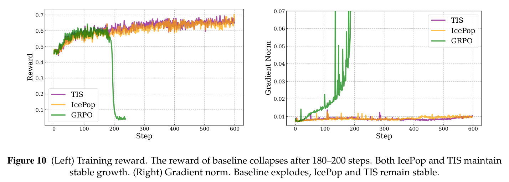
概率差异。如果不处理不匹配，概率差异会像基线设置中那样迅速增大。相比之下，TIS 和 IcePop 都将训练与推理概率的 KL 散度保持在合理范围内。虽然三种方法的最大概率差异均随训练上升，IcePop 的差异保持相对较低，甚至在400步内下降（见图11左）。我们还注意到，TIS 始终比我们具有更大的极端差异和更快增长，可能是因为它在训练中纳入了噪声策略更新。
探索空间。图11右显示，IcePop 的对数概率始终维持在低于 TIS 的水平，隐含表明我们的方法避免了过度自信预测，从而确保更大的探索空间；低概率 token 更容易被选择，最终增加回答多样性。
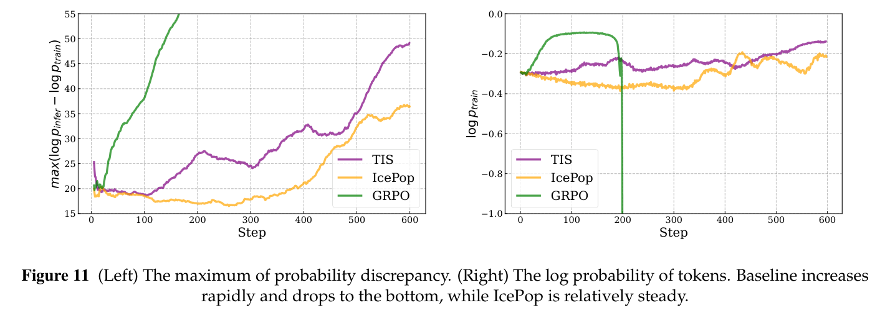
病态 token。实验中，掩码机制的裁剪比例保持在训练 token 的1–2‰左右（见图12）。随着训练推进，裁剪比例急剧上升，说明越来越多细微但有害的 gradient 更新发生，因此需要更高裁剪比例。我们还详细分析了被裁剪的 token。下方右图显示，相比全部 token，被裁剪 token 的熵更高，说明这些 token 在训练中具有重要作用。
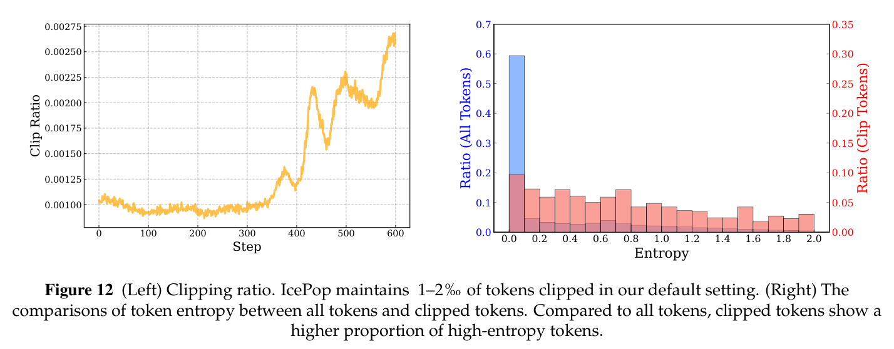
敏感性分析。我们比较校准比率的不同掩码范围如何影响训练。具体测试三种范围：（1）\(\alpha=0.5,\beta=5.0\)（默认范围）；（2）\(\alpha=0.5,\beta=2.0\)（较窄范围）；（3）\(\alpha=0.4,\beta=5.0\)（较宽范围）。如图13所示：
- 默认掩码范围 \([0.5,5.0]\) 不仅稳定训练，也丰富采样多样性。
- 较窄范围 \([0.5,2.0]\) 立即导致训练不稳定，表现为 gradient 范数波动和概率差异急剧增大。
- 较宽范围 \([0.4,5.0]\) 仍能稳定训练，但与默认设置相比，纳入了对数概率更高的 token。
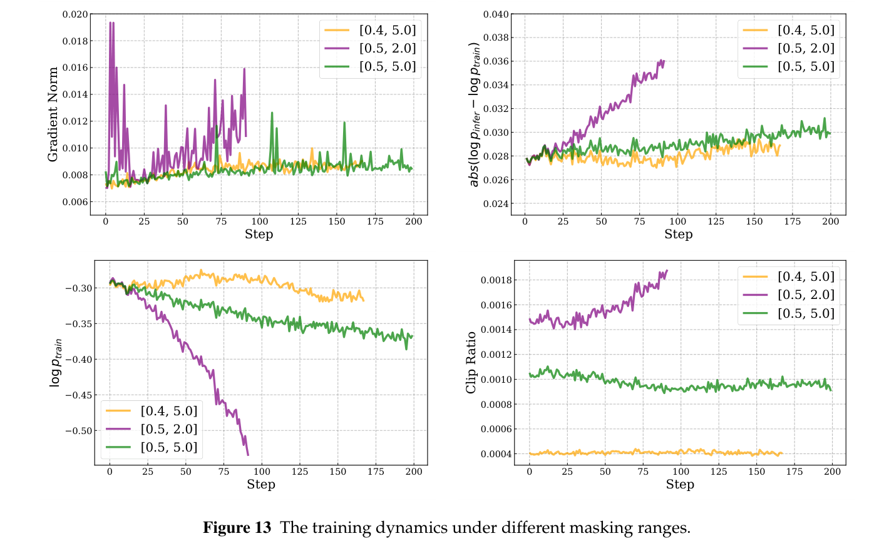
D 训练数据分析
本节分析 SFT 与 RL 数据集的组成。首先，图14给出 SFT 数据的领域分布，说明其多样性，这种多样性为模型广泛知识基础提供支撑。随后，图15详细展示 RL 数据的复杂度分布。
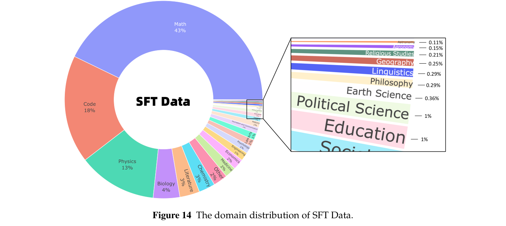
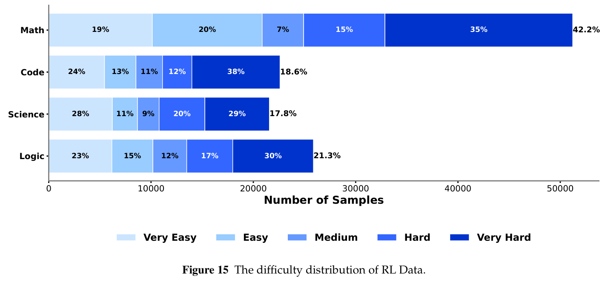
E IMO 案例
如正文所述，我们提出的 Ring-1T 在 IMO 2025 上达到银牌水平。其详细 IMO 2025 结果可参见 AWorld10。以下展示 Ring-1T 对竞赛第1题给出的详细解答：
问题：平面上一条直线若既不平行于 \(x\) 轴，也不平行于 \(y\) 轴或直线 \(x+y=0\)，则称为 sunny。给定整数 \(n\ge3\)，求所有非负整数 \(k\)，使得平面上存在 \(n\) 条互不相同的直线，同时满足：1．对于所有满足 \(a+b\le n+1\) 的正整数 \(a,b\)，点 \((a,b)\) 至少位于其中一条直线上；2．这 \(n\) 条直线中恰好有 \(k\) 条 sunny 直线。
解答：由 Ring-1T 生成。
概述
a．结论
我已找到完整解答。满足条件的非负整数恰好为 \(k=0\)、\(k=1\) 和 \(k=3\)。所有其他值（即偶数 \(k\ge2\)、奇数 \(k\ge5\)，以及 \(k>n\)）均不可能。
b．方法概要
问题要求用恰好 \(n\) 条不同直线覆盖所有满足 \(a+b\le n+1\) 的点 \((a,b)\in\mathbb Z_+\times\mathbb Z_+\)，其中恰有 \(k\) 条 sunny 直线（不平行于 \(x\) 轴、\(y\) 轴或 \(x+y=0\)）。
关键观察：
- 需要覆盖的点组成三角形网格 \(P_n\)，包含 \(T(n)=\frac{n(n+1)}2\) 个点。
- 非 sunny 直线分为三类：水平线 \(y=c\)、垂直线 \(x=d\)，以及对角线 \(x+y=e\)。
- 由于网格中共线性的几何约束，任意 sunny 直线在任何同构于 \(P_k\) 的子集上最多覆盖 \(\lfloor\frac{k+1}2\rfloor\) 个点。
关键结果：
- 偶数 \(k\ge2\)：最少未覆盖点数 \(U(k)=\frac{k(k+1)}2\) 超过 \(k\) 条 sunny 直线的最大覆盖数 \(k\cdot\frac k2\)，因此不可能。
- 奇数 \(k\ge5\)：令 \(k=2t-1\)、\(t\ge3\)，最小未覆盖集合 \(P_k\) 有 \(t(2t-1)\) 个点。虽然理论上若每条 sunny 直线覆盖 \(t\) 个点，\(k\) 条即可覆盖它，但 \(P_k\) 中仅存在3条互不相交、各含 \(t\) 个点的 sunny 直线，余下 \(2t(t-2)\) 个点无法被剩余 \(2t-4\) 条直线覆盖（因为对 \(t\ge3\)，\(2t(t-2)>(2t-4)(t-1)\)）。
10 https://github.com/inclusionAI/AWorld/tree/main/examples/imo/samples/samples%20from%20Ring-1T
- \(k=0,1,3\)：明确构造表明这些情况总能实现：
- \(k=0\)：使用 \(n\) 条对角线 \(x+y=2,\ldots,n+1\)。
- \(k=1\)：使用 \(n-1\) 条水平线，再用一条 sunny 直线穿过唯一未覆盖的点。
- \(k=3\)：使用 \(n-3\) 条水平线，留下同构于 \(P_3\) 的子网格，它可被划分为3条 sunny 直线。
构造策略：
- 对于 \(k=3\)，用斜率为 \(1,-2,-\frac12\) 的三条特定 sunny 直线覆盖未覆盖子网格 \(P_3\)；对 \(P_3\) 显式验证，再通过坐标变换推广到更大的 \(n\)。
详细解答
步骤1：理解点集
令 \(N=n+1\)。需要覆盖的点集为：
它包含 \(T(n)=\frac{n(n+1)}2\) 个点。每个点都位于一条水平线 \(y=b\)、一条垂直线 \(x=a\) 和一条对角线 \(x+y=s\) 上。
步骤2：非 sunny 直线的最大覆盖数
定义 \(M(m,n)\) 为 \(m\) 条非 sunny 直线最多能覆盖的 \(P_n\) 中点数。已知：
通过选择最大的 \(m\) 条非 sunny 直线（例如最上方 \(m\) 行）达到。若使用 \(m=n-k\) 条非 sunny 直线，则未覆盖点数最少为：
这 \(U(k)\) 个点必须被 \(k\) 条 sunny 直线覆盖。
步骤3：偶数 \(k\ge2\) 不可能
对于偶数 \(k\ge2\)，\(U(k)=\frac{k(k+1)}2\)。任何 sunny 直线在同构于 \(P_k\) 的集合中，最多覆盖 \(\lfloor\frac{k+1}2\rfloor=\frac k2\) 个点。因此，\(k\) 条 sunny 直线至多覆盖：
所以偶数 \(k\ge2\) 时不存在符合条件的配置。
步骤4：奇数 \(k\ge5\) 不可能
令 \(k=2t-1\)，其中 \(t\ge3\)。则 \(U(k)=t(2t-1)\)。在 \(P_k\) 中，每条 sunny 直线最多含 \(t\) 个点，但只有3条互不相交的 \(t\) 点 sunny 直线（例如斜率为 \(1,-2,-\frac12\)），共覆盖 \(3t\) 个点。剩余点数为：
还剩 \(k-3=2t-4\) 条直线，每条至多覆盖 \(t-1\) 个点，因此最大覆盖数为：
由于 \(t\ge3\) 时，\(2t(t-2)=2t^2-4t>2t^2-6t+4\)，剩余点无法覆盖。所以奇数 \(k\ge5\) 时不存在符合条件的配置。
步骤5：\(k=0\) 可行
使用 \(n\) 条直线 \(x+y=2,3,\ldots,n+1\)。它们都是非 sunny 直线（斜率为 \(-1\)），将 \(P_n\) 划分并覆盖全部 \(T(n)\) 个点。因此 \(k=0\) 可行。
步骤6：\(k=1\) 可行
使用 \(n-1\) 条水平线 \(y=1,2,\ldots,n-1\)，覆盖所有满足 \(b\le n-1\) 的点。唯一未覆盖点为 \((1,n)\)（因为 \(a+n\le n+1\Rightarrow a=1\)）。用一条 sunny 直线覆盖它，例如 \(y=x+(n-1)\)（斜率1，为 sunny）。这条直线不同于那些水平线，因此全部 \(n\) 条直线不同，且恰好 \(k=1\) 条 sunny。
步骤7：\(k=3\) 可行
使用 \(m=n-3\) 条水平线 \(y=1,2,\ldots,m\)，覆盖所有满足 \(b\le m\) 的点。未覆盖点满足 \(b\ge m+1\)、\(a\ge1\)、\(a+b\le N\)。代入 \(b'=b-m\)，得到 \(a+b'\le4\)，形成一个同构于 \(P_3\)、包含6个点的子网格：
用三条 sunny 直线覆盖 \(P_3\)：
- \(L_1\)：\((1,1),(2,2)\)（斜率1）；
- \(L_2\)：\((1,2),(3,1)\)（斜率 \(-\frac12\)）；
- \(L_3\)：\((1,3),(2,1)\)（斜率 \(-2\)）。
这些直线均为 sunny（斜率不是 \(0,\infty,-1\)），且互不相交，覆盖全部6个点。变换回原坐标 \(b=b'+m\) 后，直线仍互不相同并保持 sunny。与 \(m\) 条非 sunny 水平线合在一起，得到 \(n\) 条不同直线，其中恰有 \(k=3\) 条 sunny。
步骤8：刻画的完备性
- \(k=0\)：通过对角线总能实现。
- \(k=1\)：通过 \(n-1\) 条水平线和一条 sunny 直线总能实现。
- \(k=3\)：当 \(n\ge3\) 时，上述构造总能实现。
- 偶数 \(k\ge2\)：因覆盖不足而不可能。
- 奇数 \(k\ge5\)：因 \(P_k\) 的几何约束而不可能。
- \(k>n\)：因为只有 \(n\) 条直线，所以不可能。
其他 \(k\) 值均不可行。
最终答案
满足条件的非负整数为 \(k=0\)、\(k=1\) 和 \(k=3\)。因此解为：